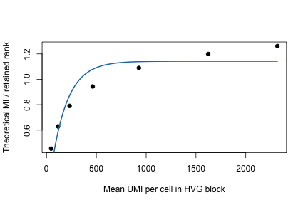

This example asks how a spectral signal estimate changes with sequencing depth, represented here as total UMI depth. It starts from the same real Jurkat 10x HVG count block used in the cell-number tutorial.
The workflow is:
fit_umi_scaling() to fit spectra across the depth grid;coef(), summary(), and plot();predict() to extrapolate to higher depth.counts_file <- file.path(
"..", "..", "..",
"outputs", "exploration", "jurkat_glmpca_gaussian_snr_by_n",
"jurkat_glmpca_counts_hvg.csv"
)
counts_full <- as.matrix(read.csv(counts_file, row.names = 1, check.names = FALSE))
dim(counts_full)
#> [1] 400 5000
summary(colSums(counts_full))
#> Min. 1st Qu. Median Mean 3rd Qu. Max.
#> 77 1314 1944 2294 2861 21442
To keep rendering fast, use 3,000 cells from the 5,000-cell tutorial block.
cells_use <- sample(colnames(counts_full), 3000)
counts_base <- counts_full[, cells_use, drop = FALSE]
summary(colSums(counts_base))
#> Min. 1st Qu. Median Mean 3rd Qu. Max.
#> 82 1306 1943 2317 2872 21442
fit_umi_scaling() binomially thins counts to each UMI fraction, compares each
downsampled spectrum to the full-depth reference with mi_theory(), and fits a
saturating curve to normalized MI.
umi_fit <- fit_umi_scaling(
counts_base,
umi_grid = c(0.02, 0.05, 0.1, 0.2, 0.4, 0.7, 1.0),
n_cells = ncol(counts_base),
n_features = 300,
transform = "log1p",
min_cells = 10,
r = 8,
R = 3,
p_sim = 100,
seed = 1
)
umi_fit$data
#> mean_umi_per_cell mean_mi sd_mi se_mi mean_mi_norm sd_mi_norm se_mi_norm
#> 1 46.4670 3.633146 NA NA 0.4541432 NA NA
#> 2 116.0313 5.032449 NA NA 0.6290561 NA NA
#> 3 231.6250 6.324499 NA NA 0.7905623 NA NA
#> 4 463.4467 7.548752 NA NA 0.9435940 NA NA
#> 5 927.0967 8.717384 NA NA 1.0896730 NA NA
#> 6 1622.5780 9.595680 NA NA 1.1994600 NA NA
#> 7 2317.3497 10.092073 NA NA 1.2615092 NA NA
#> mean_lambda1_over_mp_edge mean_n_spikes n_rep_observed I_pred resid
#> 1 9.938554 19 1 0.2872285 0.16691469
#> 2 20.611851 17 1 0.5880582 0.04099792
#> 3 35.587023 18 1 0.8726643 -0.08210191
#> 4 60.580374 21 1 1.0787666 -0.13517265
#> 5 99.200838 27 1 1.1388246 -0.04915156
#> 6 149.957418 34 1 1.1423139 0.05714608
#> 7 191.296562 40 1 1.1423597 0.11914948
coef(umi_fit)
#> I_inf k
#> 1.142360293 0.006232299
summary(umi_fit)
#> type model x_col y_col n_points ok message I_inf
#> 1 umi saturating mean_umi_per_cell mean_mi_norm 7 TRUE ok 1.14236
#> k R2 RMSE MAE
#> 1 0.006232299 0.8626101 0.103117 0.09294776
predict(umi_fit, data.frame(mean_umi_per_cell = c(2500, 3500, 5000)))
#> [1] 1.14236 1.14236 1.14236
plot(umi_fit, xlab = "Mean UMI per cell in HVG block", ylab = "Theoretical MI / retained rank")

Use another real count matrix as counts_full, repeat the binomial thinning
across fractions and replicates, and store the response you want to model. The
spectral estimation pieces stay the same.